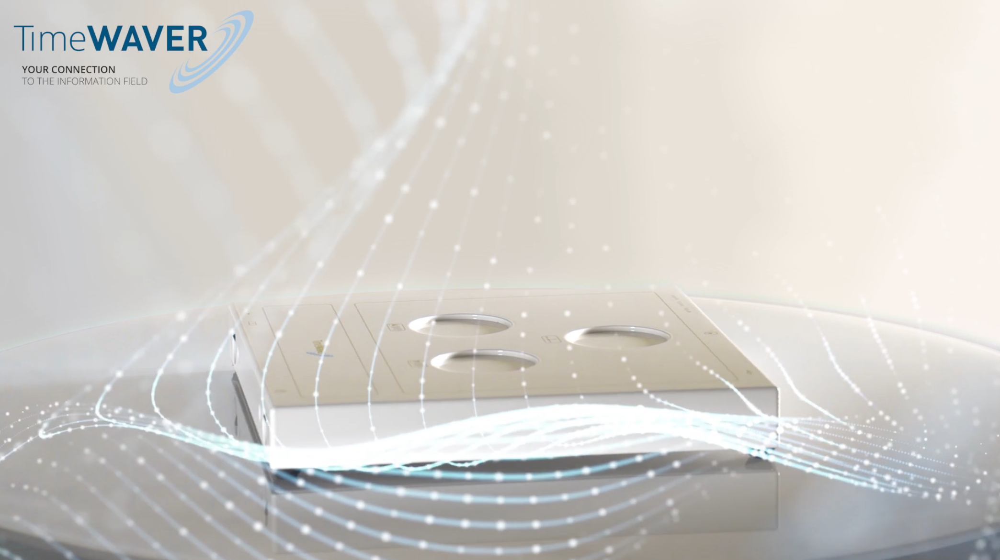
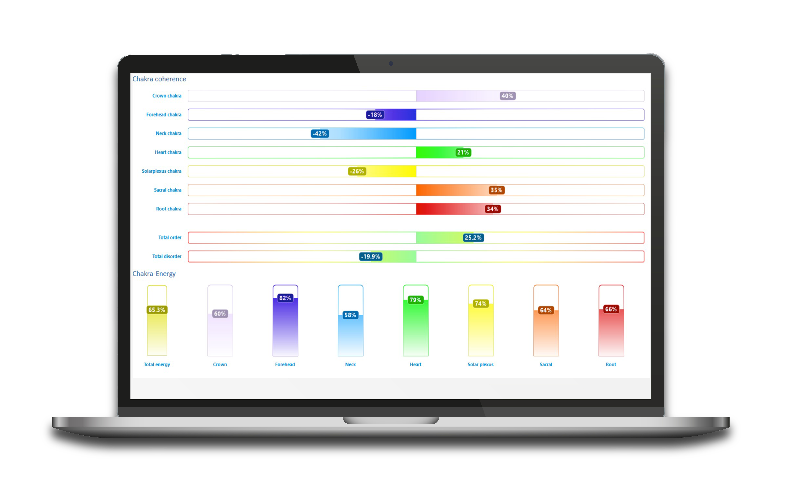
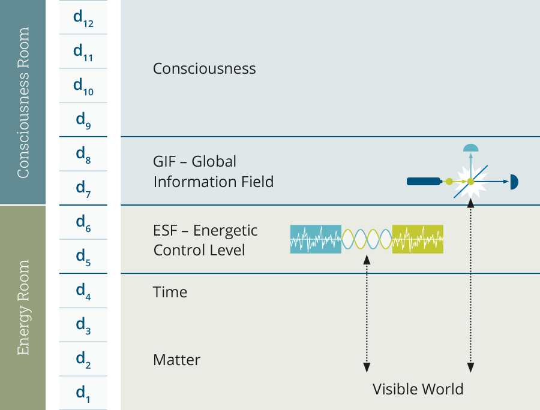

身心健康 · TimeWaver 諮詢
透過 TimeWaver 信息場技術與芳香療法，陪你覺察內在、調和能量，安住於當下的圓滿。 Reconnect with the present moment — harmony for body and mind.
什麼是 TimeWaver
An invitation to listen — through the information field.
TimeWaver 是一套源自德國的信息場技術。我們透過它去分析與和諧身心的深層背景，讓被打結的能量重新流動，陪你在放鬆中找回內在的平衡與覺察。

TimeWaver 是源自德國的信息場分析系統，連結意識與物質，協助你在生活、健康與目標中達到和諧。
What is TimeWaver? An information field technology that bridges consciousness and matter.
我們每個人都有兩個面向：身體（物質）與思想（意識）。這兩者的連結，就是所謂的「信息場」。它既不屬於身體，也不屬於精神，而是兩者之間一種全新的存在。
TimeWaver 的創始人 Marcus Schmieke 說：「思想可以在信息場中創造出顯化在物質中的形狀；物質世界同樣可以影響信息場的思想。當身體與意識不能相互交流，我們便會生病。」
TimeWaver 系統正是透過信息場技術，分析與協調身心的深層背景因素，讓被阻塞的能量重新流動。

TimeWaver 在德國研發，現已被全球逾 1,500 名諮詢師使用。系統會鎖定你個人的信息場，即時分析，並從 12 個不同維度進行頻率的調整與調和。
分析範圍涵蓋：身體壓力成因、睡眠質素影響因素、細胞健康狀態、免疫系統狀態、情緒及信念的影響、居住環境的影響等。
每一個人身體失衡的成因各有不同，可以是食物敏感、毒素過多、情緒壓力或環境因素。TimeWaver 幫助你從信息場中找出肉眼看不見的根源，而不只是處理表面症狀。
TimeWaver 的理論基礎來自德國物理學家 Burkhard Heim（Werner Heisenberg 的學生）在 20 世紀 70 年代末提出的統一場論。他完成了許多著名物理學家（包括 Einstein 和 Hawking）未能完成的任務。
根據 Heim 的模型，信息場位於第 7 維和第 8 維——這是我們存在的層面，所有問題的答案、預先決定和所有知識都儲存於此。通過 TimeWaver，更高的維度與我們習慣的時空四個維度進行溝通。

透過多維度的信息場分析，促進深度自我覺察，比較「意識」與「潛意識」之間的差異，協助你找到真正屬於自己的方向。
根據 13 個生命領域（家庭、財務、健康、事業、友誼、靈性等），以 1–10 分進行自我評估。
透過回答 TimeWaver 的問題，讓你的夢想、願望與願景變得更加清晰具體。
多維度分析將你的自我評價（意識）與潛意識進行比較，把隱藏的模式帶入覺察。
從短期和長期目標的角度，優化你的觀點，制定具體可行的行動計劃。
根據 TimeWaver 的評估進行諮詢，與顧問一起執行計劃，持續追蹤進展。
TimeWaver 的信息場技術可以應用於生活各個層面，從個人身心健康到企業管理，提供多元的支持與洞察。
在我們的諮詢中，客人常帶來以下議題：
全球約 10-30% 人口受睡眠障礙影響。TimeWaver 幫助找出影響睡眠的信息場因素。
長期壓力、焦慮、情緒困擾背後往往有更深的信息場根源需要被看見與調和。
細胞膜電位降低是許多身體失衡的根源。TimeWaver 頻率調和助你恢復自然電壓。
首次諮詢包含 15 分鐘免費了解，讓我陪你看看哪一種方式最適合此刻的你。
影片即將上線
三分鐘了解 TimeWaver 如何精準探測身心狀態，數據說話，不是盲估。
影片即將上線
唔需請假、唔需出門——四週遙距調和的真實流程示範。
✦ 四週體驗後的分享
「以前總是感覺有什麼卡住了，但說不清楚在哪裡。調和報告出來的時候，那些卡點一目了然——不是我的感覺，是儀器直接顯示出來的。四週之後，做決定時那種拉扯感消失了，整個人清爽了很多，連身邊的人都說我不一樣了。」
✦ 四週全家調和後的日常
「最驚喜的是，儀器的分析竟然把我們家的狀況說得一清二楚——每個人的卡點都不一樣，但全部都在報告裡。四週遙距調和之後，家裡的氛圍輕鬆了，孩子睡得好了，飯桌上的笑聲多了。我終於感覺，全家人回到了同一個頻率上。」
✦ 四週調和 · 零打擾日程
「完全不需要請假，不需要改變任何日程——這對我來說非常重要。報告裡呈現的每一個狀態，都精準對應了我近期的生活，像一面鏡子。調和之後，那種說不出來的沉重感慢慢散了，睡眠穩了，早上醒來開始有期待感了。」